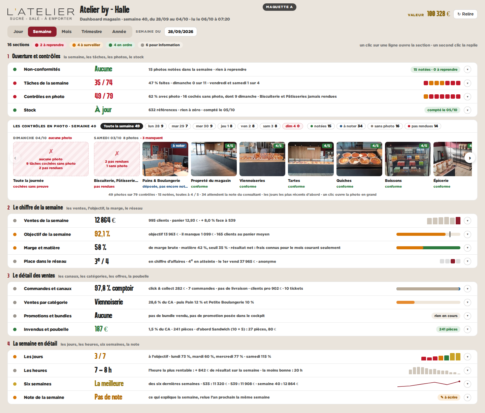
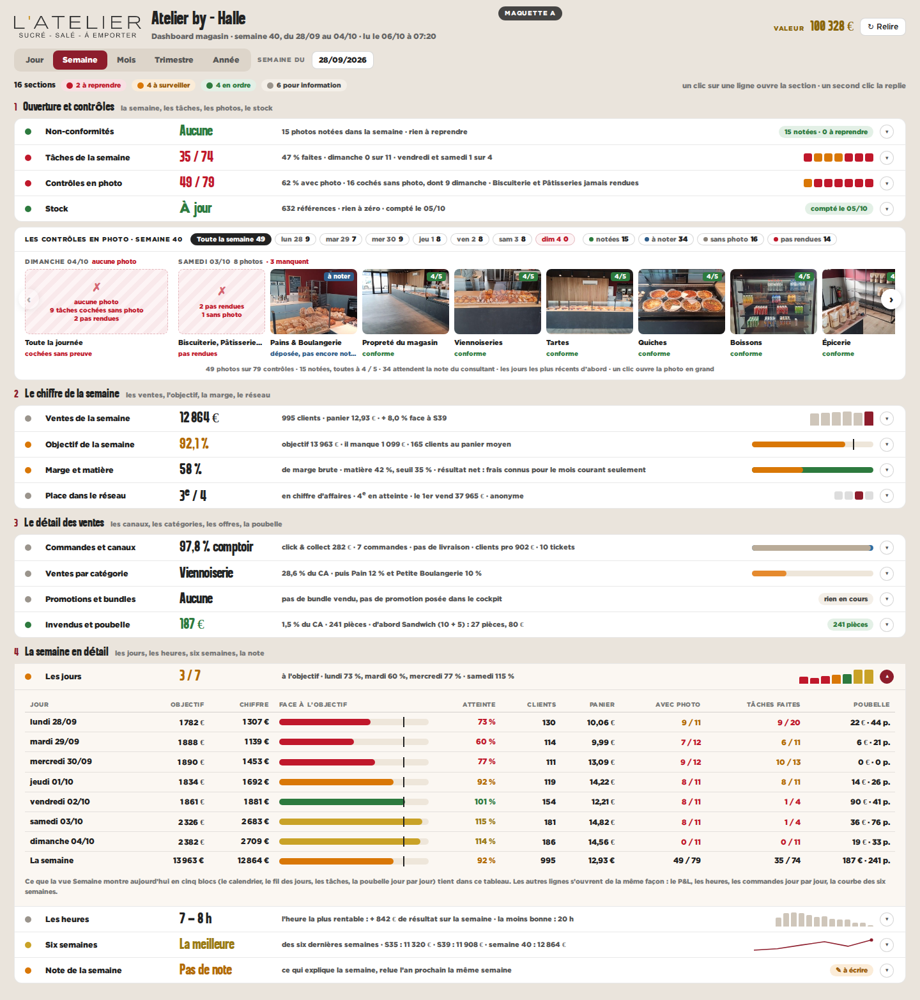
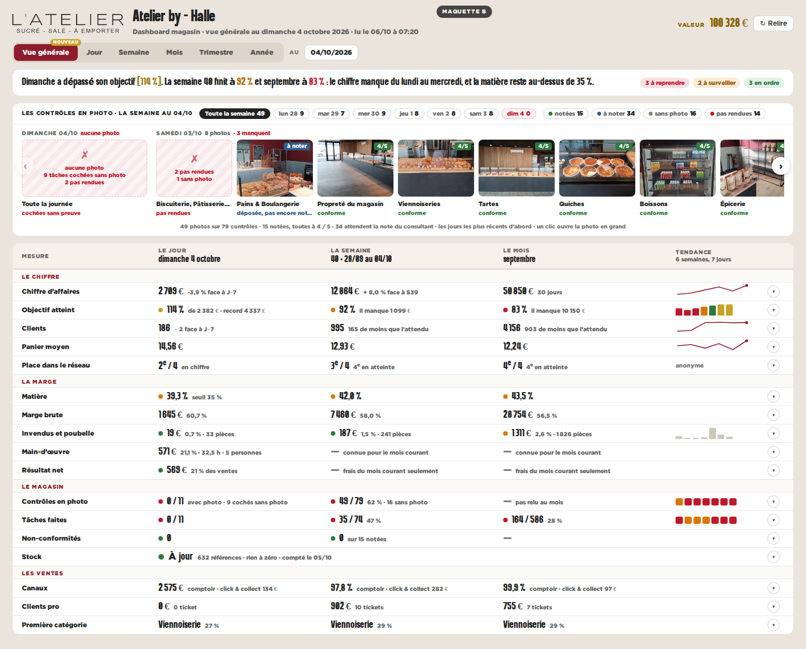
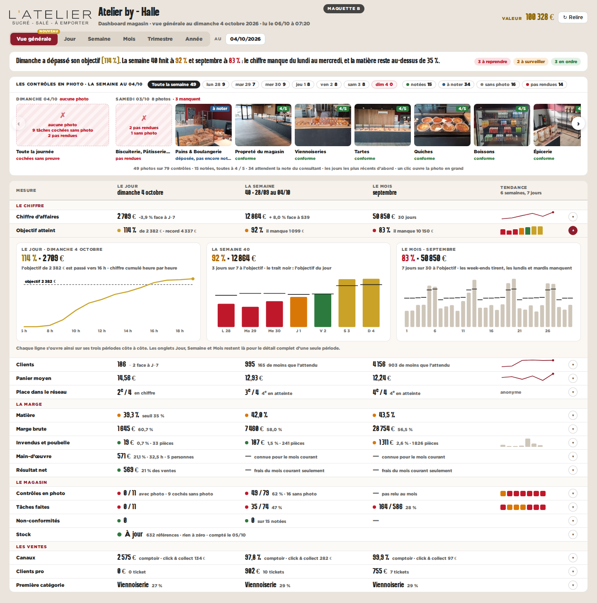
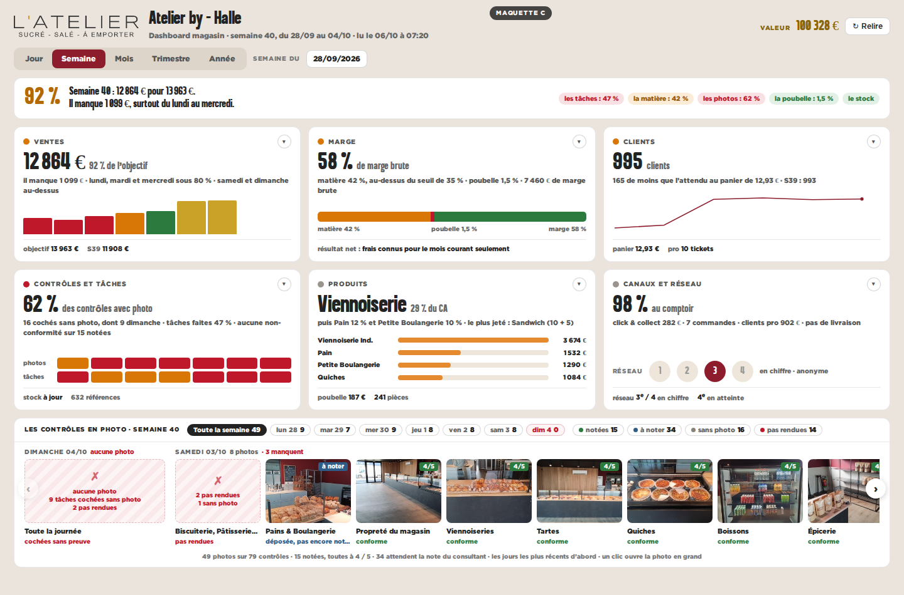
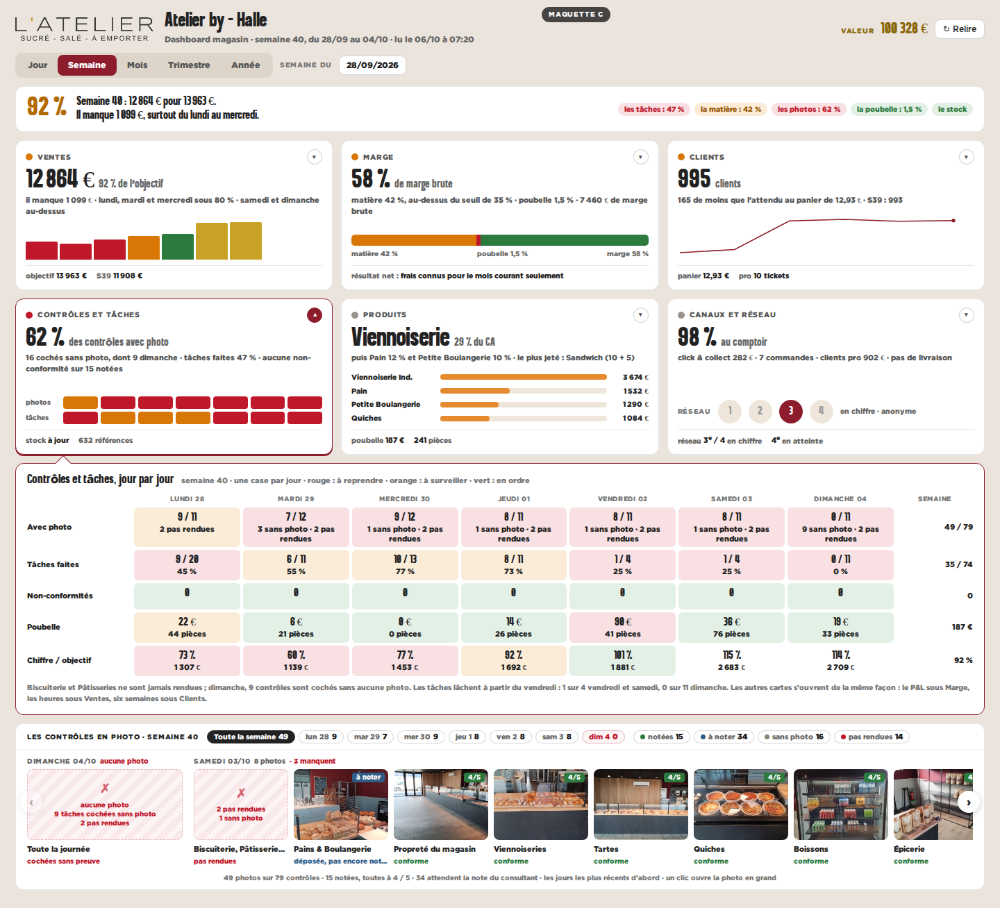

Atelier by - Halle · chiffres et photos réels lus le 06/10/2026 · dimanche 4 octobre, semaine 40 (28/09 au 04/10), septembre · réseau anonyme · le téléphone garde ses trois onglets · dans les trois, le carrousel des photos des tâches de la semaine reste visible, sans clic
AUne ligne par section, partout
La forme de la vue Jour, reprise pour la semaine et le mois : quatre chapitres, seize lignes, chaque section en liste déroulante.

repliée

une section ouverte
Ce qu’elle apporte
- la même lecture que la vue Jour, déjà en place : rien à réapprendre
- la vue Semaine passe de 3 770 px à moins de 1 000 px repliée
- chaque section garde tout son détail sous sa ligne
Ce qu’elle coûte
- une période à la fois : comparer jour, semaine et mois demande trois onglets
- seize lignes de texte : il faut lire pour trier
BLe tableau croisé
Un onglet « Vue générale » : les mesures en lignes, le jour, la semaine et le mois en colonnes. Une ligne s’ouvre sur ses trois périodes.

repliée

une section ouverte
Ce qu’elle apporte
- une seule page répond à « comment va le magasin ? »
- les écarts sautent aux yeux : le dimanche à 114 %, le mois à 83 %
- les onglets Jour, Semaine et Mois restent pour le détail complet
Ce qu’elle coûte
- un onglet de plus
- des cases vides là où le serveur ne chiffre pas encore : le résultat net d’une semaine ou d’un mois clos
CSix domaines en cartes
Ventes, marge, clients, contrôles, produits, canaux : une carte par domaine, un graphique, la couleur d’abord. Le détail s’ouvre en tiroir sous la carte.

repliée

une section ouverte
Ce qu’elle apporte
- le plus visuel : on voit avant de lire
- tient sur un écran ; le tiroir garde la page sous les yeux
Ce qu’elle coûte
- moins de chiffres d’un coup
- regroupe des sections : la note, les promotions et le stock passent en pied de carte